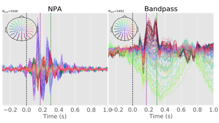

Andrew Doyle
I'm a software developer/researcher working for Dr. Alan C. Evans' McGill Centre for Integrative Neuroscience at the Montreal Neurological Institute. I currently build tools to support and perform neuroscience research with supervised learning. I'm starting a PhD in Quantitative Life Sciences in September, and I'd like to explore ways to deploy neuroimaging tools beyond the lab, and use AI to do SCIENCE!
I'm interested in using deep learning and other probabilistic methods to study learning and biological intelligence, and maybe explore how emotions affect learning. I really like visualizations, and some of my brainart can be found in the in the brains section.
Projects
Neural Power Spectra
Time-domain analysis using features of models of power spectra and other bases.
Parametric models of EEG power spectra can be used to design digital filters that select different components of the neural signal. Hypotheses based on these models can be validated using time-domain deep learning decoding experiments.
Related pre-prints:
- Doyle, JA "Amplifying the Neural Power Spectrum." bioRxiv, 2019.
- Doyle, JA "What Colour is Neural Noise?" arXiv, 2018.
Related posters:
MS Drug Responder Prediction
Models brain MRI as a Bag-of-Lesions predict future disease activity
My master's project with Tal Arbel's Probabilistic Vision Group. We cluster features of lesions in MRI to predict future disease activity, and whether patients are likely to be responders to one of the drugs from the clinical trial.
Related publications:
- Doyle, Andrew, et al. "Predicting Future Disease Activity and Treatment Responders for Multiple Sclerosis Patients Using a Bag-of-Lesions Brain Representation." MICCAI, 2017.
- Doyle, Andrew, et al. "Lesion Detection, Segmentation and Prediction in Multiple Sclerosis Clinical Trials." MICCAI BrainLesion Workshop, 2017.
Infant Brain MRI Segmentation
MICCAI 2017 Grand Challenge on 6-month infant brain MRI Segmentation
Obtaining accurate white/gray matter segmentations is difficult because the brain's myelin is still growing. Accurate longitudinal segmentations can be used to characterize brain development.

Related publications:
- Wang, Li et al. Benchmark on Automatic 6-month-old Infant Brain Segmentation Algorithms: The iSeg-2017 Challenge." IEEE, 2019.
- Fonov, Vladimir, et al. "NeuroMTL iSEG challenge methods." bioRxiv (2018): 278465.
AutoQC of T1w MRI
Motion detection and other artifact Quality Control for MRI
This project uses CNNs to automatically predict whether scans will pass quality control and be useful for follow-up study.
Related posters:
- Doyle, Andrew, et al. "Automatic Quality Control of Infant MRI." Poster presentation at Montreal AI Symposium, 2017.
- Doyle, Andrew, et al. "Automatic Quality Control of Human Brain T1w MRI Scans." Poster presentation at Medical Imaging meets NIPS Workshop of NIPS, 2017.
CBRAIN
Neuroinformatics platform for distributed computation
In CBRAIN I worked mainly on implementing the RESTful API and describing it in the OpenAPI specification, as well as created the user registration system.
Related poster:
- Doyle, Andrew, et al. "CBRAIN as a Platform for Open Science." Poster presentation at Human Brain Mapping Conference, 2017.
Brains
Here are some examples of the 3D printing I've done of my own brain and the BigBrain, as well as some artwork I've generated using style transfer of Nina Cherney's artwork on CIVET surfaces and slices extracted from my own brain MRI.
CV
© Andrew Doyle 2018